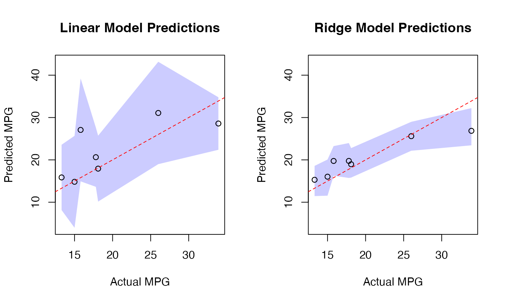
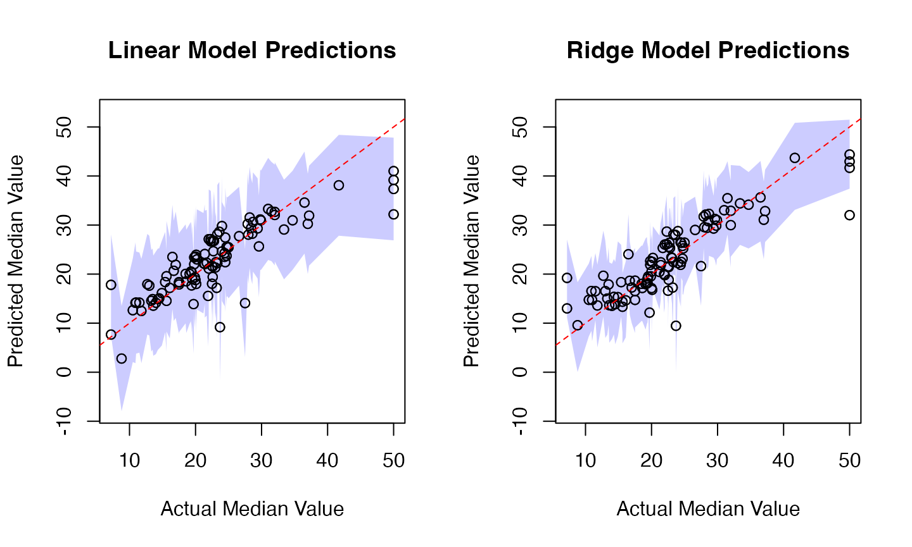
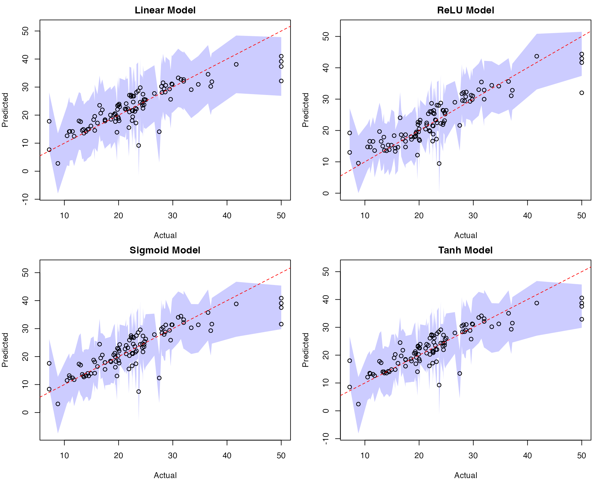
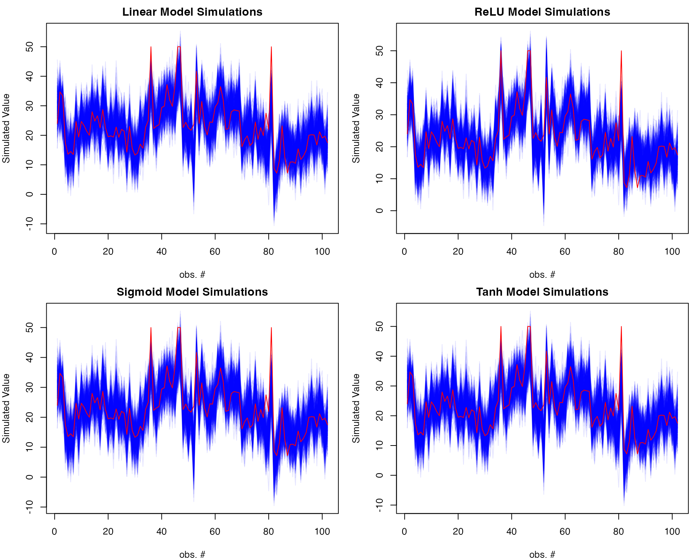

rvfl.Rmd
library(rvfl)
# Fit regular linear model
start <- proc.time()[3]
lm_model <- lm(mpg ~ ., data = train_data)
print(proc.time()[3] - start)## elapsed
## 0.017##
## Call:
## lm(formula = mpg ~ ., data = train_data)
##
## Residuals:
## Min 1Q Median 3Q Max
## -3.5211 -0.9792 -0.0324 1.1808 4.9814
##
## Coefficients:
## Estimate Std. Error t value Pr(>|t|)
## (Intercept) -5.054416 25.456900 -0.199 0.8455
## cyl 0.695392 1.396506 0.498 0.6262
## disp 0.005254 0.017342 0.303 0.7664
## hp -0.007610 0.027723 -0.274 0.7877
## drat 4.128157 2.724353 1.515 0.1520
## wt -1.621396 2.139071 -0.758 0.4610
## qsec 0.064356 0.932144 0.069 0.9459
## vs 0.138716 3.421183 0.041 0.9682
## am -0.498476 2.956568 -0.169 0.8685
## gear 4.402648 2.287816 1.924 0.0749 .
## carb -1.999389 1.299580 -1.538 0.1462
## ---
## Signif. codes: 0 '***' 0.001 '**' 0.01 '*' 0.05 '.' 0.1 ' ' 1
##
## Residual standard error: 2.464 on 14 degrees of freedom
## Multiple R-squared: 0.8938, Adjusted R-squared: 0.818
## F-statistic: 11.79 on 10 and 14 DF, p-value: 3.4e-05## 2.5 % 97.5 %
## (Intercept) -59.65403559 49.54520296
## cyl -2.29981561 3.69060001
## disp -0.03194096 0.04244882
## hp -0.06707095 0.05185084
## drat -1.71500030 9.97131342
## wt -6.20924769 2.96645550
## qsec -1.93489537 2.06360651
## vs -7.19899241 7.47642359
## am -6.83968216 5.84273112
## gear -0.50422869 9.30952400
## carb -4.78671119 0.78793282
# Fit calibrated model
start <- proc.time()[3]
ridge_model <- rvfl::rvfl(x = as.matrix(train_data[,-1]), y = train_data$mpg)
print(proc.time()[3] - start)## elapsed
## 0.193##
## Call:
## engine(formula = y ~ . - 1, data = df_train)
##
## Residuals:
## Min 1Q Median 3Q Max
## -3.4586 -1.7751 -0.4056 1.5360 5.2494
##
## Coefficients:
## Estimate Std. Error t value Pr(>|t|)
## cyl -0.2934 0.6109 -0.480 0.638
## disp -0.4021 0.6033 -0.667 0.516
## hp -0.4266 0.6034 -0.707 0.491
## drat 0.5285 0.5736 0.921 0.372
## wt -0.5200 0.5947 -0.874 0.397
## qsec 0.1419 0.5949 0.238 0.815
## vs 0.2738 0.5787 0.473 0.643
## am 0.4077 0.5711 0.714 0.487
## gear 0.2922 0.5785 0.505 0.621
## carb -0.3778 0.5421 -0.697 0.497
## h1 -0.2444 0.6039 -0.405 0.692
## h2 0.6964 0.5848 1.191 0.253
## h3 -0.3387 0.5802 -0.584 0.569
## h4 -0.1628 0.5448 -0.299 0.769
## h5 0.5906 0.5822 1.014 0.328
##
## Residual standard error: 2.925 on 14 degrees of freedom
## Multiple R-squared: 0.7534, Adjusted R-squared: 0.4892
## F-statistic: 2.851 on 15 and 14 DF, p-value: 0.02863## 2.5 % 97.5 %
## cyl -1.6037724 1.0168960
## disp -1.6959495 0.8917476
## hp -1.7208611 0.8676077
## drat -0.7018175 1.7587974
## wt -1.7955969 0.7555437
## qsec -1.1340563 1.4177867
## vs -0.9673542 1.5149112
## am -0.8172659 1.6326674
## gear -0.9485594 1.5330304
## carb -1.5405137 0.7848791
## h1 -1.5396642 1.0508179
## h2 -0.5577916 1.9506325
## h3 -1.5831708 0.9057347
## h4 -1.3312796 1.0055891
## h5 -0.6580768 1.8392040
#print(simulate(ridge_model, newdata = test_data))
results <- data.frame(
Actual = mtcars[-train_idx, ]$mpg,
LM_Pred = lm_pred[,"fit"],
LM_Lower = lm_pred[,"lwr"],
LM_Upper = lm_pred[,"upr"],
Ridge_Pred = ridge_pred[,"fit"],
Ridge_Lower = ridge_pred[,"lwr"],
Ridge_Upper = ridge_pred[,"upr"]
)
# Print results
print("Prediction Intervals Comparison:")## [1] "Prediction Intervals Comparison:"## Actual LM_Pred LM_Lower LM_Upper Ridge_Pred Ridge_Lower
## Valiant 18.1 17.93324 10.149847 25.71663 18.96396 15.81971
## Merc 280C 17.8 20.63530 13.636618 27.63398 19.75734 15.72996
## Toyota Corolla 33.9 28.58373 22.379666 34.78779 26.85749 23.43556
## Camaro Z28 13.3 15.85710 8.140858 23.57335 15.29984 11.44900
## Porsche 914-2 26.0 31.07535 18.988702 43.16201 25.59502 22.15517
## Ford Pantera L 15.8 27.07516 14.930150 39.22016 19.74423 16.25442
## Ridge_Upper
## Valiant 22.78275
## Merc 280C 23.97086
## Toyota Corolla 32.21672
## Camaro Z28 18.58237
## Porsche 914-2 28.98960
## Ford Pantera L 23.25351
# Calculate coverage and Winkler scores
lm_coverage <- mean(mtcars[-train_idx, ]$mpg >= results$LM_Lower &
mtcars[-train_idx, ]$mpg <= results$LM_Upper)
ridge_coverage <- mean(mtcars[-train_idx, ]$mpg >= results$Ridge_Lower &
mtcars[-train_idx, ]$mpg <= results$Ridge_Upper)
lm_winkler <- misc::winkler_score(mtcars[-train_idx, ]$mpg, results$LM_Lower, results$LM_Upper)
ridge_winkler <- misc::winkler_score(mtcars[-train_idx, ]$mpg, results$Ridge_Lower, results$Ridge_Upper)
print(sprintf("\nPrediction interval metrics:"))## [1] "\nPrediction interval metrics:"
print(sprintf("Linear Model: %.1f%% coverage, %.3f Winkler score",
100 * lm_coverage, mean(lm_winkler)))## [1] "Linear Model: 100.0% coverage, 18.226 Winkler score"
print(sprintf("Calibrated Model: %.1f%% coverage, %.3f Winkler score",
100 * ridge_coverage, mean(ridge_winkler)))## [1] "Calibrated Model: 71.4% coverage, 19.857 Winkler score"
# Set common y-axis limits for both plots
y_limits <- range(c(results$LM_Lower, results$LM_Upper,
results$Ridge_Lower, results$Ridge_Upper))
# Plot prediction intervals
par(mfrow=c(1,2))
# Linear Model Plot
plot(results$Actual, results$LM_Pred,
main="Linear Model Predictions",
xlab="Actual MPG", ylab="Predicted MPG",
ylim=y_limits)
# Add shaded prediction intervals
x_ordered <- order(results$Actual)
polygon(c(results$Actual[x_ordered], rev(results$Actual[x_ordered])),
c(results$LM_Lower[x_ordered], rev(results$LM_Upper[x_ordered])),
col=rgb(0, 0, 1, 0.2), border=NA)
points(results$Actual, results$LM_Pred) # Replot points over shading
abline(0, 1, col="red", lty=2) # Add diagonal line
# Ridge Model Plot
plot(results$Actual, results$Ridge_Pred,
main="Ridge Model Predictions",
xlab="Actual MPG", ylab="Predicted MPG",
ylim=y_limits)
# Add shaded prediction intervals
polygon(c(results$Actual[x_ordered], rev(results$Actual[x_ordered])),
c(results$Ridge_Lower[x_ordered], rev(results$Ridge_Upper[x_ordered])),
col=rgb(0, 0, 1, 0.2), border=NA)
points(results$Actual, results$Ridge_Pred) # Replot points over shading
abline(0, 1, col="red", lty=2) # Add diagonal line
# Add simulation plot
par(mfrow=c(1,1))
# Generate 100 simulations
sims <- simulate(ridge_model, newdata = as.matrix(test_data), nsim = 500)
# Plot simulations
matplot(sims, type = "l",
col = rgb(0, 0, 1, 0.1), lty = 1,
xlab = "obs. #", ylab = "Simulated MPG",
main = "Ridge Model Simulations")
lines(mtcars[-train_idx, ]$mpg, col = "red")
# Fit regular linear model
start <- proc.time()[3]
lm_model <- rvfl::rvfl(x = as.matrix(train_data[,-14]), y = train_data$medv, activ = "linear")#lm(medv ~ ., data = train_data)
print(proc.time()[3] - start)## elapsed
## 0.097##
## Call:
## engine(formula = y ~ . - 1, data = df_train)
##
## Residuals:
## Min 1Q Median 3Q Max
## -10.8740 -2.8709 -0.5828 1.8772 26.0796
##
## Coefficients:
## Estimate Std. Error t value Pr(>|t|)
## crim -0.97711 1.03548 -0.944 0.3465
## zn 1.05329 1.00842 1.044 0.2975
## indus 0.25561 1.09993 0.232 0.8165
## chas 0.69443 0.85692 0.810 0.4187
## nox -1.65544 1.11978 -1.478 0.1409
## rm 2.54157 1.01833 2.496 0.0134 *
## age 0.59156 1.15721 0.511 0.6098
## dis -2.50321 1.19731 -2.091 0.0378 *
## rad 2.05723 1.09839 1.873 0.0625 .
## tax -1.12820 1.30239 -0.866 0.3874
## ptratio -1.49972 1.00988 -1.485 0.1391
## black 0.88341 0.90808 0.973 0.3318
## lstat -3.85354 0.94186 -4.091 6.18e-05 ***
## h1 -0.12471 1.90545 -0.065 0.9479
## h2 0.12471 1.90545 0.065 0.9479
## h3 0.12541 1.60619 0.078 0.9378
## h4 -0.06691 1.61069 -0.042 0.9669
## h5 0.68743 1.65118 0.416 0.6776
## ---
## Signif. codes: 0 '***' 0.001 '**' 0.01 '*' 0.05 '.' 0.1 ' ' 1
##
## Residual standard error: 5.062 on 203 degrees of freedom
## Multiple R-squared: 0.69, Adjusted R-squared: 0.6625
## F-statistic: 25.1 on 18 and 203 DF, p-value: < 2.2e-16## 2.5 % 97.5 %
## crim -3.0187805 1.0645547
## zn -0.9350311 3.0416020
## indus -1.9131387 2.4243638
## chas -0.9951706 2.3840263
## nox -3.8633281 0.5524414
## rm 0.5337147 4.5494251
## age -1.6901406 2.8732508
## dis -4.8639566 -0.1424538
## rad -0.1084805 4.2229500
## tax -3.6961423 1.4397357
## ptratio -3.4909239 0.4914810
## black -0.9070666 2.6738816
## lstat -5.7106232 -1.9964644
## h1 -3.8817198 3.6323082
## h2 -3.6323082 3.8817198
## h3 -3.0415556 3.2923664
## h4 -3.2427373 3.1089125
## h5 -2.5682466 3.9430974
# Fit calibrated model
start <- proc.time()[3]
ridge_model <- rvfl::rvfl(x = as.matrix(train_data[,-14]), y = train_data$medv)
print(proc.time()[3] - start)## elapsed
## 0.135##
## Call:
## engine(formula = y ~ . - 1, data = df_train)
##
## Residuals:
## Min 1Q Median 3Q Max
## -9.6436 -2.5860 -0.4639 2.0094 24.4992
##
## Coefficients:
## Estimate Std. Error t value Pr(>|t|)
## crim -3.0623 1.1491 -2.665 0.008317 **
## zn 0.2952 0.9853 0.300 0.764763
## indus 0.3479 0.9903 0.351 0.725768
## chas 0.7550 0.7475 1.010 0.313689
## nox -2.4144 0.9770 -2.471 0.014291 *
## rm 1.6957 0.8527 1.989 0.048091 *
## age 1.0275 0.9888 1.039 0.299986
## dis -3.8911 1.0732 -3.626 0.000364 ***
## rad 2.9026 1.1001 2.639 0.008970 **
## tax -1.8431 1.2394 -1.487 0.138527
## ptratio -0.7089 0.9333 -0.760 0.448393
## black 1.3562 1.0188 1.331 0.184607
## lstat -3.6097 0.8140 -4.434 1.51e-05 ***
## h1 1.4467 1.5982 0.905 0.366441
## h2 2.2793 1.6075 1.418 0.157757
## h3 2.0981 0.6087 3.447 0.000689 ***
## h4 1.8865 1.3423 1.405 0.161431
## h5 1.8774 0.7984 2.352 0.019650 *
## ---
## Signif. codes: 0 '***' 0.001 '**' 0.01 '*' 0.05 '.' 0.1 ' ' 1
##
## Residual standard error: 4.403 on 203 degrees of freedom
## Multiple R-squared: 0.7655, Adjusted R-squared: 0.7447
## F-statistic: 36.81 on 18 and 203 DF, p-value: < 2.2e-16## 2.5 % 97.5 %
## crim -5.32791535 -0.7966590
## zn -1.64742341 2.2378519
## indus -1.60482173 2.3005293
## chas -0.71890031 2.2289375
## nox -4.34089360 -0.4879895
## rm 0.01437801 3.3770093
## age -0.92219782 2.9772528
## dis -6.00709823 -1.7751782
## rad 0.73360783 5.0715876
## tax -4.28680612 0.6005612
## ptratio -2.54904493 1.1312701
## black -0.65250165 3.3648953
## lstat -5.21467118 -2.0046819
## h1 -1.70458059 4.5979892
## h2 -0.89028309 5.4487882
## h3 0.89797558 3.2982400
## h4 -0.76016904 4.5331138
## h5 0.30329787 3.4515435
#print(simulate(ridge_model, newdata = test_data))
lm_pred <- predict(lm_model, newdata = test_data, interval = "prediction")
ridge_pred <- predict(ridge_model, newdata = as.matrix(test_data), method = "gaussian")
results <- data.frame(
Actual = Boston[-train_idx, ]$medv,
LM_Pred = lm_pred[,"fit"],
LM_Lower = lm_pred[,"lwr"],
LM_Upper = lm_pred[,"upr"],
Ridge_Pred = ridge_pred[,"fit"],
Ridge_Lower = ridge_pred[,"lwr"],
Ridge_Upper = ridge_pred[,"upr"]
)
# Print results
print("Prediction Intervals Comparison:")## [1] "Prediction Intervals Comparison:"## Actual LM_Pred LM_Lower LM_Upper Ridge_Pred Ridge_Lower Ridge_Upper
## 1 24.0 29.79046 19.608073 39.97285 28.75770 19.568995 37.96624
## 3 34.7 30.96586 20.872948 41.05878 34.14903 25.222195 40.80861
## 4 33.4 29.08560 18.927692 39.24351 34.41607 25.955182 42.07926
## 18 17.5 17.88680 7.769896 28.00369 14.73369 7.990620 25.30735
## 21 13.6 13.55881 3.342978 23.77464 13.65759 6.005290 22.40761
## 24 14.5 15.04997 4.841070 25.25886 13.86386 5.700152 22.48673
# Calculate coverage and Winkler scores
lm_coverage <- mean(Boston[-train_idx, ]$medv >= results$LM_Lower &
Boston[-train_idx, ]$medv <= results$LM_Upper)
ridge_coverage <- mean(Boston[-train_idx, ]$medv >= results$Ridge_Lower &
Boston[-train_idx, ]$medv <= results$Ridge_Upper)
lm_winkler <- misc::winkler_score(Boston[-train_idx, ]$medv, results$LM_Lower, results$LM_Upper)
ridge_winkler <- misc::winkler_score(Boston[-train_idx, ]$medv, results$Ridge_Lower, results$Ridge_Upper)
print(sprintf("\nPrediction interval metrics:"))## [1] "\nPrediction interval metrics:"
print(sprintf("Linear Model: %.1f%% coverage, %.3f Winkler score",
100 * lm_coverage, mean(lm_winkler)))## [1] "Linear Model: 94.1% coverage, 26.946 Winkler score"
print(sprintf("Calibrated Model: %.1f%% coverage, %.3f Winkler score",
100 * ridge_coverage, mean(ridge_winkler)))## [1] "Calibrated Model: 95.1% coverage, 25.419 Winkler score"
# Visualization
# Set common y-axis limits for both plots
y_limits <- range(c(results$LM_Lower, results$LM_Upper,
results$Ridge_Lower, results$Ridge_Upper))
par(mfrow=c(1,2))
# Linear Model Plot
plot(results$Actual, results$LM_Pred,
main="Linear Model Predictions",
xlab="Actual Median Value", ylab="Predicted Median Value",
ylim=y_limits)
x_ordered <- order(results$Actual)
polygon(c(results$Actual[x_ordered], rev(results$Actual[x_ordered])),
c(results$LM_Lower[x_ordered], rev(results$LM_Upper[x_ordered])),
col=rgb(0, 0, 1, 0.2), border=NA)
points(results$Actual, results$LM_Pred)
abline(0, 1, col="red", lty=2)
# Ridge Model Plot
plot(results$Actual, results$Ridge_Pred,
main="Ridge Model Predictions",
xlab="Actual Median Value", ylab="Predicted Median Value",
ylim=y_limits)
polygon(c(results$Actual[x_ordered], rev(results$Actual[x_ordered])),
c(results$Ridge_Lower[x_ordered], rev(results$Ridge_Upper[x_ordered])),
col=rgb(0, 0, 1, 0.2), border=NA)
points(results$Actual, results$Ridge_Pred)
abline(0, 1, col="red", lty=2)
# Add simulation plot
par(mfrow=c(1,1))
sims <- simulate(ridge_model, newdata = as.matrix(test_data), nsim = 500)
matplot(sims, type = "l",
col = rgb(0, 0, 1, 0.1), lty = 1,
xlab = "obs. #", ylab = "Simulated Median Value",
main = "Ridge Model Simulations")
lines(Boston[-train_idx, ]$medv, col = "red")
# Adjust margins to fit plots
par(mfrow=c(2,2), mar=c(4,4,2,1)) # Bottom, left, top, right margins
# Fit models with different activation functions
ridge_relu <- rvfl::rvfl(x = as.matrix(train_data[,-14]), y = train_data$medv, activ = "relu")
ridge_sigmoid <- rvfl::rvfl(x = as.matrix(train_data[,-14]), y = train_data$medv, activ = "sigmoid")
ridge_tanh <- rvfl::rvfl(x = as.matrix(train_data[,-14]), y = train_data$medv, activ = "tanh")
# Make predictions
relu_pred <- predict(ridge_relu, newdata = as.matrix(test_data), method = "gaussian")
sigmoid_pred <- predict(ridge_sigmoid, newdata = as.matrix(test_data), method = "gaussian")
tanh_pred <- predict(ridge_tanh, newdata = as.matrix(test_data), method = "gaussian")
# Combine results
results_all <- data.frame(
Actual = Boston[-train_idx, ]$medv,
LM_Pred = lm_pred[,"fit"],
LM_Lower = lm_pred[,"lwr"],
LM_Upper = lm_pred[,"upr"],
ReLU_Pred = relu_pred[,"fit"],
ReLU_Lower = relu_pred[,"lwr"],
ReLU_Upper = relu_pred[,"upr"],
Sigmoid_Pred = sigmoid_pred[,"fit"],
Sigmoid_Lower = sigmoid_pred[,"lwr"],
Sigmoid_Upper = sigmoid_pred[,"upr"],
Tanh_Pred = tanh_pred[,"fit"],
Tanh_Lower = tanh_pred[,"lwr"],
Tanh_Upper = tanh_pred[,"upr"]
)
# Calculate coverage and Winkler scores for each model
lm_coverage <- mean(Boston[-train_idx, ]$medv >= results_all$LM_Lower &
Boston[-train_idx, ]$medv <= results_all$LM_Upper)
relu_coverage <- mean(Boston[-train_idx, ]$medv >= results_all$ReLU_Lower &
Boston[-train_idx, ]$medv <= results_all$ReLU_Upper)
sigmoid_coverage <- mean(Boston[-train_idx, ]$medv >= results_all$Sigmoid_Lower &
Boston[-train_idx, ]$medv <= results_all$Sigmoid_Upper)
tanh_coverage <- mean(Boston[-train_idx, ]$medv >= results_all$Tanh_Lower &
Boston[-train_idx, ]$medv <= results_all$Tanh_Upper)
lm_winkler <- misc::winkler_score(Boston[-train_idx, ]$medv,
results_all$LM_Lower, results_all$LM_Upper)
relu_winkler <- misc::winkler_score(Boston[-train_idx, ]$medv,
results_all$ReLU_Lower, results_all$ReLU_Upper)
sigmoid_winkler <- misc::winkler_score(Boston[-train_idx, ]$medv,
results_all$Sigmoid_Lower, results_all$Sigmoid_Upper)
tanh_winkler <- misc::winkler_score(Boston[-train_idx, ]$medv,
results_all$Tanh_Lower, results_all$Tanh_Upper)
print(sprintf("\nPrediction interval metrics:"))## [1] "\nPrediction interval metrics:"
print(sprintf("Linear Model: %.1f%% coverage, %.3f Winkler score",
100 * lm_coverage, mean(lm_winkler)))## [1] "Linear Model: 94.1% coverage, 26.946 Winkler score"
print(sprintf("ReLU Model: %.1f%% coverage, %.3f Winkler score",
100 * relu_coverage, mean(relu_winkler)))## [1] "ReLU Model: 95.1% coverage, 25.419 Winkler score"
print(sprintf("Sigmoid Model: %.1f%% coverage, %.3f Winkler score",
100 * sigmoid_coverage, mean(sigmoid_winkler)))## [1] "Sigmoid Model: 93.1% coverage, 31.566 Winkler score"
print(sprintf("Tanh Model: %.1f%% coverage, %.3f Winkler score",
100 * tanh_coverage, mean(tanh_winkler)))## [1] "Tanh Model: 93.1% coverage, 30.259 Winkler score"
# Visualization
par(mfrow=c(2,2))
# Linear Model Plot
plot(results_all$Actual, results_all$LM_Pred,
main="Linear Model",
xlab="Actual", ylab="Predicted",
ylim=range(results_all[,c("LM_Lower","LM_Upper")]))
x_ordered <- order(results_all$Actual)
polygon(c(results_all$Actual[x_ordered], rev(results_all$Actual[x_ordered])),
c(results_all$LM_Lower[x_ordered], rev(results_all$LM_Upper[x_ordered])),
col=rgb(0,0,1,0.2), border=NA)
points(results_all$Actual, results_all$LM_Pred)
abline(0,1, col="red", lty=2)
# ReLU Model Plot
plot(results_all$Actual, results_all$ReLU_Pred,
main="ReLU Model",
xlab="Actual", ylab="Predicted",
ylim=range(results_all[,c("ReLU_Lower","ReLU_Upper")]))
polygon(c(results_all$Actual[x_ordered], rev(results_all$Actual[x_ordered])),
c(results_all$ReLU_Lower[x_ordered], rev(results_all$ReLU_Upper[x_ordered])),
col=rgb(0,0,1,0.2), border=NA)
points(results_all$Actual, results_all$ReLU_Pred)
abline(0,1, col="red", lty=2)
# Sigmoid Model Plot
plot(results_all$Actual, results_all$Sigmoid_Pred,
main="Sigmoid Model",
xlab="Actual", ylab="Predicted",
ylim=range(results_all[,c("Sigmoid_Lower","Sigmoid_Upper")]))
polygon(c(results_all$Actual[x_ordered], rev(results_all$Actual[x_ordered])),
c(results_all$Sigmoid_Lower[x_ordered], rev(results_all$Sigmoid_Upper[x_ordered])),
col=rgb(0,0,1,0.2), border=NA)
points(results_all$Actual, results_all$Sigmoid_Pred)
abline(0,1, col="red", lty=2)
# Tanh Model Plot
plot(results_all$Actual, results_all$Tanh_Pred,
main="Tanh Model",
xlab="Actual", ylab="Predicted",
ylim=range(results_all[,c("Tanh_Lower","Tanh_Upper")]))
polygon(c(results_all$Actual[x_ordered], rev(results_all$Actual[x_ordered])),
c(results_all$Tanh_Lower[x_ordered], rev(results_all$Tanh_Upper[x_ordered])),
col=rgb(0,0,1,0.2), border=NA)
points(results_all$Actual, results_all$Tanh_Pred)
abline(0,1, col="red", lty=2)
# Adjust margins to fit plots
par(mfrow=c(2,2), mar=c(4,4,2,1)) # Bottom, left, top, right margins
# Linear Model simulations
sims_lm <- simulate(lm_model, newdata = test_data, nsim = 500)
matplot(sims_lm, type = "l",
col = rgb(0,0,1,0.1), lty = 1,
xlab = "obs. #", ylab = "Simulated Value",
main = "Linear Model Simulations")
lines(Boston[-train_idx, ]$medv, col = "red")
# ReLU Model simulations
sims_relu <- simulate(ridge_relu, newdata = as.matrix(test_data), nsim = 500)
matplot(sims_relu, type = "l",
col = rgb(0,0,1,0.1), lty = 1,
xlab = "obs. #", ylab = "Simulated Value",
main = "ReLU Model Simulations")
lines(Boston[-train_idx, ]$medv, col = "red")
# Sigmoid Model simulations
sims_sigmoid <- simulate(ridge_sigmoid, newdata = as.matrix(test_data), nsim = 500)
matplot(sims_sigmoid, type = "l",
col = rgb(0,0,1,0.1), lty = 1,
xlab = "obs. #", ylab = "Simulated Value",
main = "Sigmoid Model Simulations")
lines(Boston[-train_idx, ]$medv, col = "red")
# Tanh Model simulations
sims_tanh <- simulate(ridge_tanh, newdata = as.matrix(test_data), nsim = 500)
matplot(sims_tanh, type = "l",
col = rgb(0,0,1,0.1), lty = 1,
xlab = "obs. #", ylab = "Simulated Value",
main = "Tanh Model Simulations")
lines(Boston[-train_idx, ]$medv, col = "red")